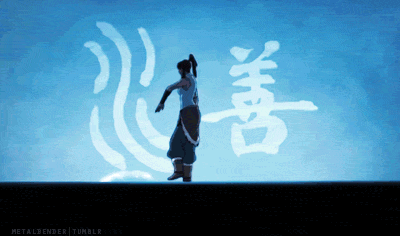

Divided between the waterbenders at the polar wastes and the denizens of the swamps, waterbender live a more tribal lifestyle, forgoing a fully regulated government. The most advanced group among the waterbenders in the community at the northern pole which withstood the Fire Nation during the war as the southern tribe was devastated an stripped of almost all their waterbenders. The swamp denizens focused more on a symbiotic nature with their surroundings, eliminating many trademarks of common society to focus on nature an their interactions with it.
Water benders originally learned their abilities from how the moon affected the tides and the ocean as a whole. As such, most of their power is derived from the moon and its phases, making them strongest during a full moon but stripping them of their abilities should anything happen to the moon spirit as the Fire Nation once attempted during their conquest. They are capable of freezing the water around them to use as improvised weapons or to create the vast fortifications protecting the northern tribe. Some trong and specialized benders are even capable of bending blood of people around them, althoug that is widely considered a horrendous crime and is forbidden htroughout the nations. Some of the swamp waterbenders have learned something similar, but they focus on the water within the vines to allow them to control the plant life to varying degrees.

Kuruk was widely considered to have been and unsuccessful and hedonistic avatar uring his time. What isn't commonly known about him is how much he had to do to fix the issues created
by Yangchen favoring humanity over the spirits. Kuruk spent much of his lifetime protecting humanity from the dark spirits which left little time for him to help humanity itself, allowing
one of his trusted friends to gather their own power and become a corrupt power in the world.
Korra was born into a world of peace after Aang passed on, there were no new wars and no explicit reason to need an avatar. She spent her early life training the different bending
techniques, eventually going to study with Aang's sone the art of airbending. During her adventures she became embroiled in many political consequences and was unfortunately severed from
her past avatars during the great convergence when the dark spirit rose to conquer the world. She rebonded with the spirit of light, starting a new avatar cycle and working towards harmony
between the spirits and humanity.